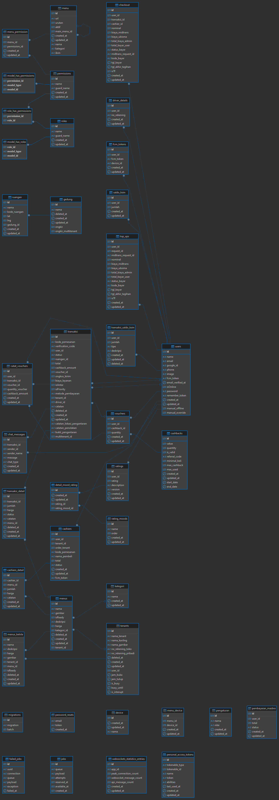

Database Entity Relationship Diagram
Welcome to the database schema registry. This page outlines the core database tables and their structural relationships underpinning the API.

1. Authentication & Users
users
The core table storing account information for all application users (Admins, Buyers, Cashiers).
- Relationships: One-To-Many with
fcm_tokens,transaksi,saldo_koin, andratings. - Auth Linking: Uses Spatie Roles/Permissions linking to
model_has_rolesgranting access levels.
roles & permissions
Tables dictating access control metrics dynamically mapped to standard Laravel Spatie structures.
- Relationships: Many-to-Many resolution tables via
role_has_permissionsandmodel_has_permissions.
2. Food Operations & Menus
tenants
Stores data regarding individual food stalls or vendors operating within the ecosystem.
- Relationships: One-To-Many to
menus. Controls operational flags likejam_buka(open),is_busy, etc.
menus & kategori
Hold itemized data corresponding to Food/Drink sales entities.
- Relationships: Each
menubelongs to onekategoriand to onetenant.
3. Orders & Transactions
transaksi & transaksi_detail
Captures all checkout processes and the itemization of those checkouts.
- Relationships:
transaksilinks to theusers(buyer),tenants(seller), andruangan(delivery location). transaksi_detailmaps individualmenusordered back to the single parenttransaksi, recording quantities and snapshot prices.
checkout & cashiers
Manages payment portals and direct cashier validation logic for non-app purchases or assisted checkouts.
4. App Finances (Coins & Refunds)
saldo_koin & transaksi_saldo_koin
Digital wallet module designed to handle app-specific currency (koin).
- Relationships:
saldo_koinlinks touserssumming the total balance.transaksi_saldo_koinyields the history of increments/decrements (e.g., Refunds on cancelled orders).
vouchers & cashbacks
Promotional metric logic storing coupon multipliers for checkout reductions.
5. Metadata & Hardware
gedung & ruangan
Navigational/Physical coordinates inside the institution denoting delivery locations for "Antar" flag transactions.
device & menu_device
Captures IoT or specific hardware endpoints (e.g. POS system hardware APIs or notification systems).